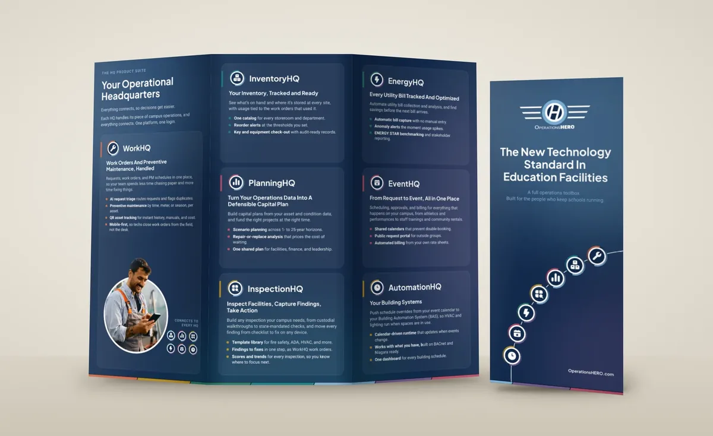
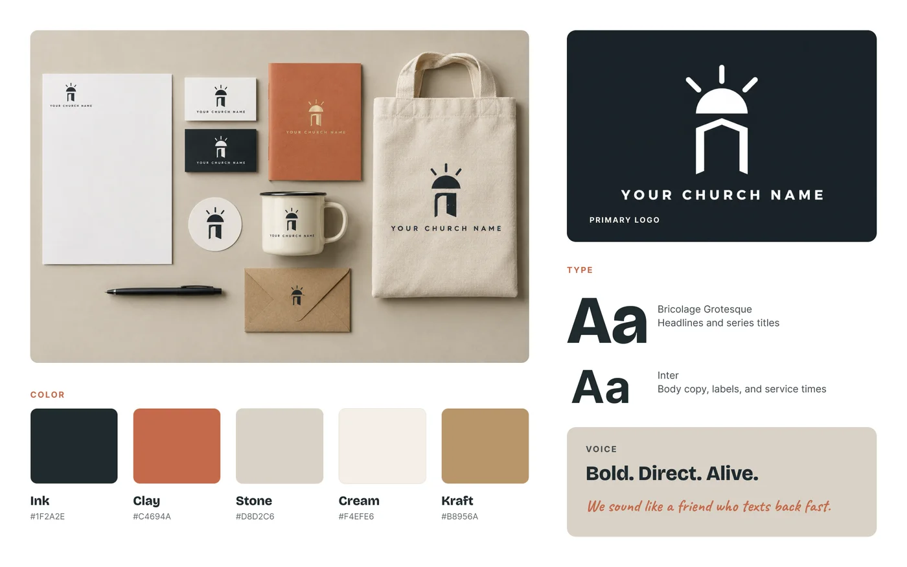
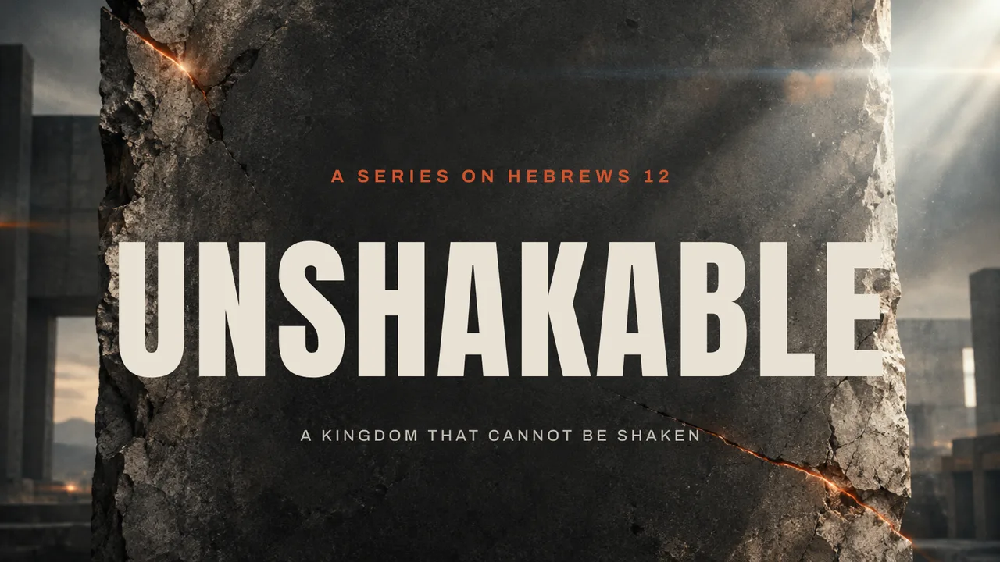
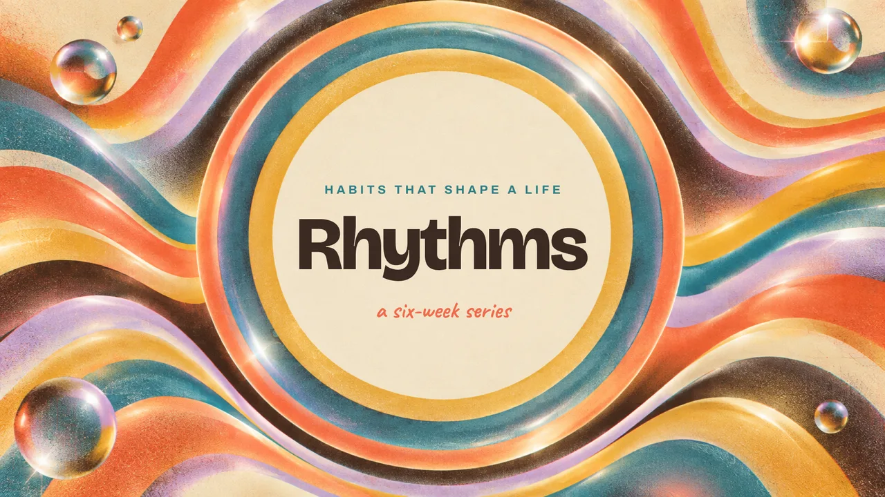
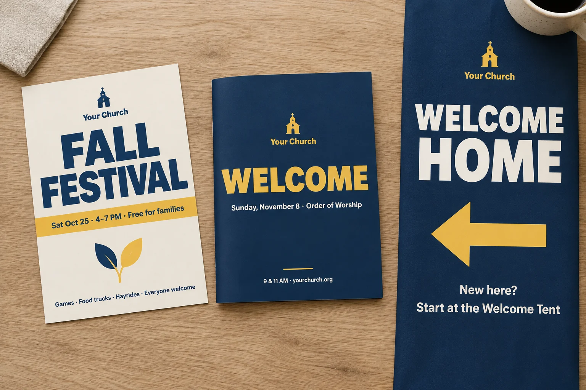

Hi, I’m David Gray, a creative in Jacksonville, Florida.
Video, design & websites for software companies
I help software companies explain what they do to buyers who aren’t technical. In house at two of them, and freelance since 2021.
- Experience
- 7 years in marketing and creative
- In house at
- Ministry Brands and ChurchTrac
- Based in
- Jacksonville, FL. Remote, Eastern time
- Open to
- Projects, retainers, and contract roles
Brands I’ve made work for
Case studies
Selected work
Three software companies, three kinds of work. Each links to a full case study.

Ministry Brands · 2022–2026
Product launches, lead gen, and customer story films
Four years as video and graphic designer across Ministry Brands’ software brands: the Amplify launch, a year-end giving campaign, webinars, a podcast, and short films with customers.
View case study →ChurchTrac · 2026
A motion ad, paid social, a calculator, and a new brand
As content marketing and creative manager, I wrote and designed three rounds of ads, a 30-second motion ad, an interactive savings calculator, and a content brand built from scratch.
View case study →
OperationsHERO · Current client
Sales collateral and a YouTube channel for facilities software
OperationsHERO makes software for school facilities teams. I wrote and designed their sales brochure and rebuilt their YouTube channel, and I’m making their video and content now.
View case study →“What makes ChurchTrac different” · I wrote and directed this product ad.
Case study →Films
Stories and films
Interviews with real customers, plus event recaps and short films. I shoot, edit, or both.
First Coast Churches annual celebration
Event recap · Shot and edited
District Kids
00:00:50 · Edited
Branding and design
Branding and design
Brand kits and graphics I’ve designed, most of them for churches. Pieces marked template are my own designs, made for any church to put its name on.




What I do
What I do
What a marketing team needs, from one person.
Video
Client testimonials, founder interviews, event recaps, and product videos. Filmed on site and edited start to finish.
Motion design
Animated product ads, explainers, logo animations, and titles and lower thirds for your videos.
Branding
Logos, brand guides, and brand kits with color, type, and voice, so everything you make looks like you.
Graphic design
UI and UX, print material, social graphics, and webinar and presentation decks that look like one company.
SEO and AEO
Articles and pages built to rank in Google and to be the answer AI tools give when buyers ask.
Web design
Marketing sites and landing pages, designed and built to load fast and read clearly.
Working together
Three ways to hire me
A single project
A launch video, a customer story, a landing page, or a campaign. Scoped and priced up front.
A monthly retainer
A set amount of video, design, and content each month. Good when your team has more ideas than hands.
A contract role
Part-time or full-time on your team for a season, working in your tools and your meetings.
- Video and motion
- Premiere Pro, After Effects, filming, lighting, color grading
- Design
- Figma, Photoshop, Illustrator, Canva
- Marketing
- Campaign strategy, copywriting, email, paid social
- Web
- HTML, CSS, Webflow, Squarespace, SEO, Google Analytics 4
About
Hi, I’m David
I started in church communications, moved into marketing for software companies, and now freelance. Most of my work has been for software made for churches and schools, so I’m used to explaining technical products to busy people who aren’t technical.
I write the copy, design the pieces, animate them, shoot and edit the video, and build the page it all lives on, so a project doesn’t get passed between five people.
I also run Grayhaven Studio, a communications studio for churches.
- 2021 – nowFreelance, and Grayhaven Studio since 2026Video, content, and campaigns for clients including OperationsHERO. Jacksonville, FL
- 2026ChurchTracContent Marketing & Creative Manager. Led campaigns from idea to finished piece.
- 2022 – 2026Ministry BrandsVideo & Graphic Designer, remote. Six brands, including Amplify, ParishSoft, and Church Motion Graphics.
- 2019 – 2022Sagamore Baptist ChurchDirector of Communications, Fort Worth, TX
- 2027Spurgeon CollegeB.A. in Communications, expected
Taking new projects
Have a launch, a video, or a campaign coming up?
I’m open to freelance projects, monthly retainers, and contract roles. Book a 30-minute call, and I’ll follow up with a short proposal and a price.